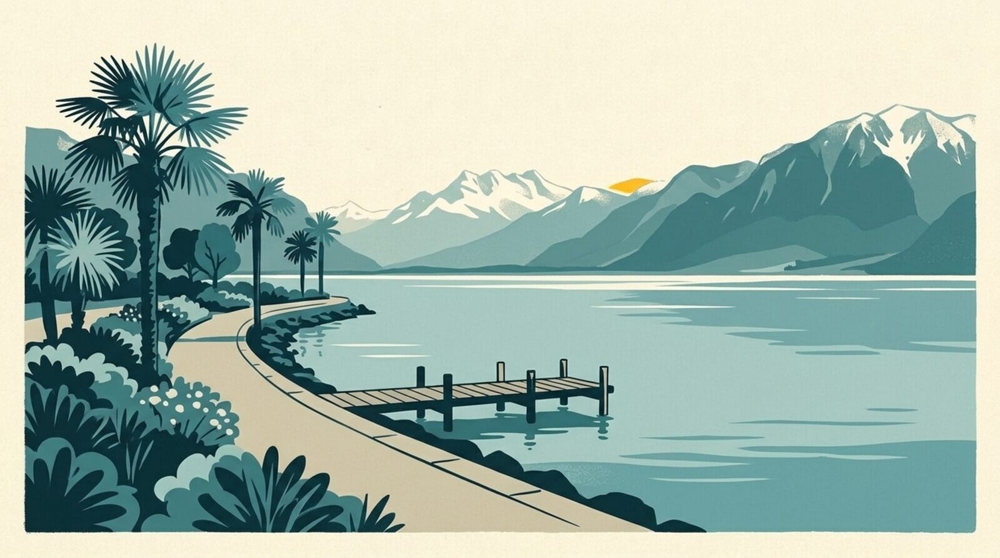

En bref
De Corseaux à Saint-Gingolph, en passant par Vevey, La Tour-de-Peilz, Montreux, Villeneuve et Le Bouveret, Mon Lac suit 9 plages. La page donne la température de l’eau du matin, les lieux au bord de l’eau et les loueurs.
Voici les plages de la Riviera suivies par l’app. Les plages de Lavaux (Lutry, Villette, Cully, Rivaz, Saint-Saphorin) ont leur propre page.
Les plages
Température de l’eau au matin du 24 novembre 2026, d’après le modèle Alplakes : de 9,7 °C à 10,2 °C selon la plage. Elle change chaque jour.
- Corseaux (9,7 °C)
- Vevey (9,9 °C)
- La Tour-de-Peilz (10,1 °C)
- Montreux – Clarens (10,2 °C)
- Veytaux (10,2 °C)
- Villeneuve (10,2 °C)
- Noville (9,8 °C)
- Le Bouveret (10,0 °C)
- Saint-Gingolph (10,2 °C)
Où boire un verre ou manger au bord de l’eau
- Hôtel des Trois Couronnes, Vevey : Terrasse panoramique Belle Époque sur les quais de Vevey.
- Kju, Vevey : Restaurant, bar et club dans un ancien hangar à bateaux du XVIIIe, une des plus belles terrasses de Vevey.
- La Véranda (Grand Hôtel du Lac), Vevey : Terrasse sur le port, le lac et les Alpes, cuisine décontractée.
- La Terrasse du Petit Palais, Montreux (de mai à août) : La terrasse du Montreux Palace, face au lac et aux Alpes, aux beaux jours.
- Le Phare, Le Bouveret : Terrasse sur le lac face au coucher de soleil, ouverte de 9 h à minuit.
- Café Helvetia « Au 17 17 », Saint-Gingolph : Grande terrasse au-dessus du lac, ouverte toute l’année.
- Restaurant Bellevue, Saint-Gingolph : Sur le quai, terrasse face au lac et aux montagnes.
Louer sur l’eau ou se réchauffer au sauna
Chaque fiche renvoie au site du loueur quand il existe. Horaires et prix changent : à confirmer auprès de lui.
- SwissPaddle, Corseaux, près de Corseaux : Paddles et wing foil à Corseaux, à côté de Nestlé Vevey.
- Nautic Loisirs, Montreux (de avril à août), près de Montreux – Clarens : Quai des Fleurs : paddles, kayaks, planches à voile et bateaux à moteur.
- Evolution 2 Saint-Gingolph, Saint-Gingolph (de juin à septembre), près de Saint-Gingolph : Base nautique de la plage municipale : paddle solo ou tandem, kayak, e-foil, de juin à septembre selon la météo.
- Water Sports Montreux, Montreux, près de Montreux – Clarens : Un des plus anciens clubs de sports nautiques de Suisse, ponton sous le Casino de Montreux : wakeboard, wakesurf et ski nautique, matériel compris.
- Steam on the Water, Petit Port Eiffel, Vevey (de octobre à avril), près de Vevey : Sauna installé au Petit Port Eiffel, vue directe sur le lac, d’octobre à avril.
- Steam on the Water, la Maladaire, La Tour-de-Peilz (de novembre à avril), près de La Tour-de-Peilz : Au camping de la Maladaire (route de Saint-Maurice 310) : roulotte-sauna au bois au bord du lac, yourte de repos, tonneau privatisable. De début novembre 2026 à mi-avril 2027, 9h–22h (dès 15h le mercredi et le jeudi). 20 francs, 18 en tarif réduit, réservation en ligne.
Avant de plonger : vérifier la qualité de l’eau. En hiver : le bain d’hiver au Léman. Le vent et l’eau du moment sont dans l’app Mon Lac.
L’eau du Léman en ce moment
La température de chaque plage est dans l’app Mon Lac, mise à jour toutes les trois heures.